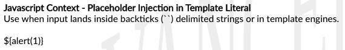

XSS in JavaScript template literals
JavaScript
template literals
are strings
literal that allow
embedded JavaScript expressions
.
The
embedded expressions
are evaluated and are normally concatenated into the surrounding text.
We can recognize
Template literals
because they
are encapsulated in backticks
instead of normal quotation marks, and
embedded expressions
are identified
using the ${...} syntax
.
Exploit
When the XSS context is into a
JavaScript template literal
, there is no need to terminate the literal. Instead, you simply need to use the
${...}
syntax to embed a
JavaScript expression
that will be executed when the literal is processed
Example:
<script>
...
var input =
`controllable data here
`;
...
</script>
then you can use the following payload to execute JavaScript without terminating the template literal:
${alert(1)}From XSS 2020 CheatSheet (by BruteLogic)